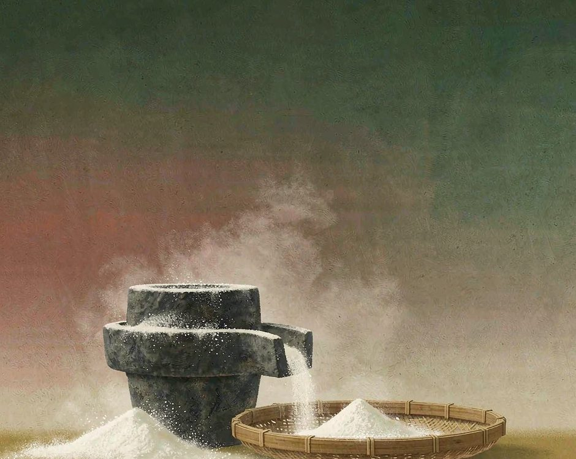
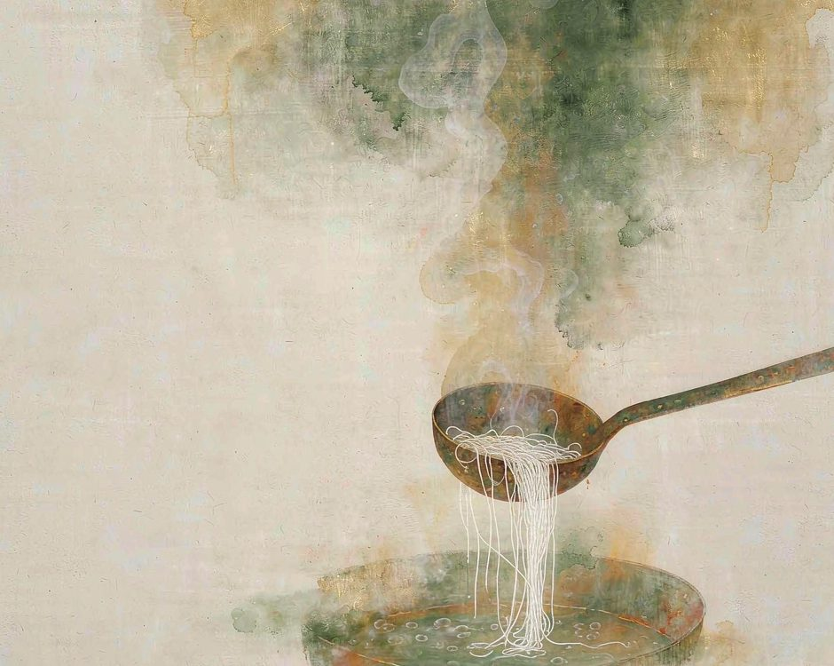
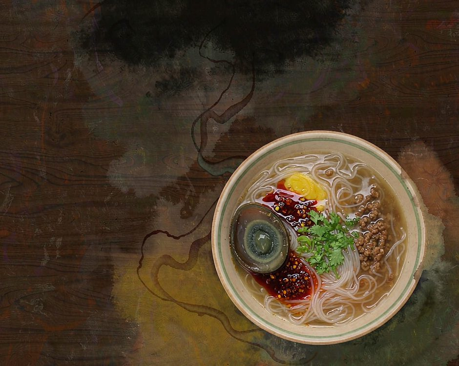

腾冲的饵丝，是米做的。

这件事听起来不稀奇。往上一层看，才有意思，这碗米长在火山灰养过的土里。
土里有火山的来历
腾冲在火山的边上。这一带有成群的火山，地底下的热水冒出来，成了温泉，成了热海。
火山灰落在山上，落在田里，积了很久，成了当地土的一部分。这样的土松，透水，看上去很普通。米就种在这样的土里。腾冲是出好米的地方，一碗饵丝从田里开始算。
一根饵丝从地里到嘴里，要走三道转化。土养出米，米磨成粉，粉做成丝。中间每一步都不能省，省一步，做出来的东西就不是这个味道。
土养米，米变粉，粉成丝。
米要先磨，再蒸，再成丝
米要先泡，泡到发胀，再磨。传统的做法用石磨，一圈一圈，磨成细浆细粉。
石磨是老的。磨盘用久了，中间会凹下去，磨出来的东西更细。做饵丝的人家，磨盘用了几十年，比新的好使。
磨出来的粉要蒸成团，趁热反复捣、揉，揉到没有气泡。这一块米团，整块的叫饵块，压成细条的，就是饵丝。

压出来的丝要下滚水，烫十几秒就捞起。烫久了会糊，捞晚了会坨。十几秒这个数，靠手背的感觉。
一碗饵丝做成，要经过泡米、磨粉、蒸团、揉团、压丝、烫熟这几道。前面几道要等，最后一道要快。
前面的慢，是为了后面的快。
一碗里装着这块地
饵丝本身是素的。要吃好，得配配料。腾冲人爱配的有稀豆粉、辣椒油、卤腐、肉末、葱花。
稀豆粉是豌豆磨的粉，冲成糊，带着豆香。辣椒油是本地辣椒炼的，香而不辣。卤腐是发酵的豆腐，咸香。这些配料各有各的做法，各有各的来路。

所以一碗腾冲饵丝，碗里装的不只是饵丝。是米，是豌豆，是辣椒，是豆腐，是这一块地上长出来的东西。
辣椒油是慢活。本地辣椒晒干，剁碎，和油一起炼。炼到辣椒的颜色完全沉下去，油变成暗红，这一步要几个小时。火太大就苦了。
诚实的部分
有一件事得说清楚。石磨磨粉这件事，费工又费时间，成本比机器磨的高。
机器磨的粉也能做饵丝，做出来的也滑，价钱便宜。石磨磨的费工，价钱就高。价钱高了买的人就少，这是很现实的矛盾。年轻的做饵丝的人也在变少。磨、蒸、揉、压，这几步都要手上功夫。练压丝要练很久，压不好就断了，断了就得重来。手艺不难懂，难的是有人愿意练。
还有一个更麻烦的事。腾冲这几年做旅游，来吃饵丝的人越来越多。吃的人多了，做的人没跟着多。有些店已经不用石磨了，改成机器粉，客人吃不出来，因为不熟。
不熟是这个行业最大的问题。米是什么米，磨到什么细度，丝压到什么粗细，这些差别吃的人尝不到，只有做的人知道。
知道的人多了，标准才立得住。现在的情况反过来，标准在消失。做的人说不清楚自己做的算什么，客人也不知道自己吃的是什么。
这些标准没有写在纸上，写在手上的手感里。手感一断，标准就断了。
这些照实说，是因为不想把一门手艺写得太顺。饵丝还是那个饵丝，人已经不是早先那批了。
想种回去
不必去腾冲，可以先学磨。
买一小袋米，泡一夜。隔天磨成浆，家里没有石磨，用调理机也行。蒸熟，看它从水变成团。这个动作的意义是，知道一碗米从颗粒变成丝，中间隔了多少事。
或者买两种米粉，一种石磨的，一种机器磨的，煮来比一比。细度差多少，尝得出来。
然后把这件事说给一个人听。说出去的时候不带着炫耀，是一条线索。听到的人或许也去查一查，自己那碗米线是怎么来的。
一个人查，三个人查，一条线就接上了。
（小练习。今天吃完一碗米线，看一眼它的粗细和颜色，想一想这是机器做的还是手做的。）
你家乡有没有一样只有手工才做得出来的东西。